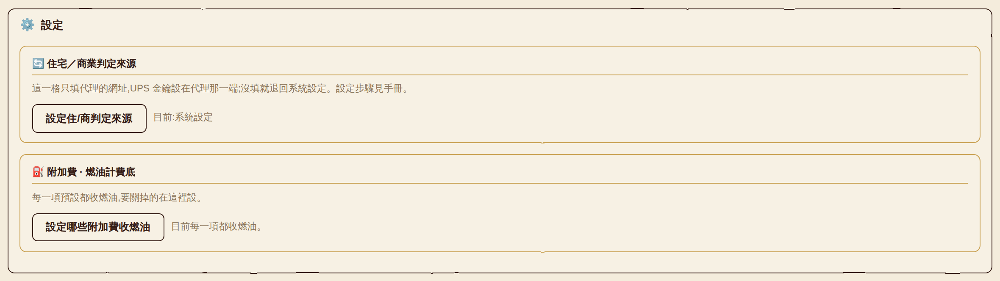
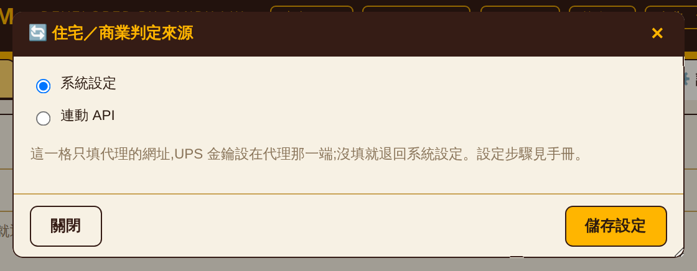
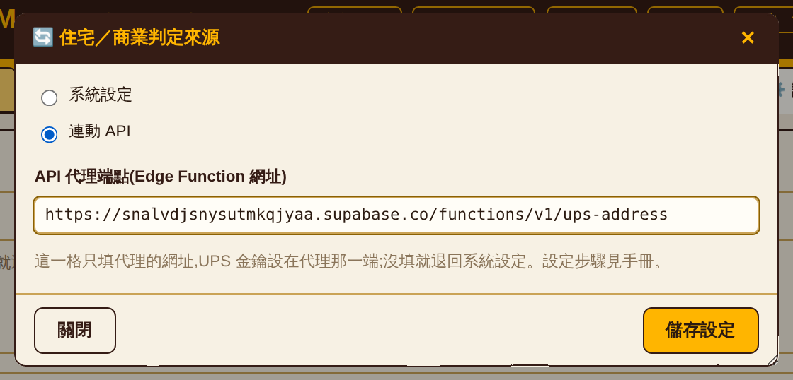
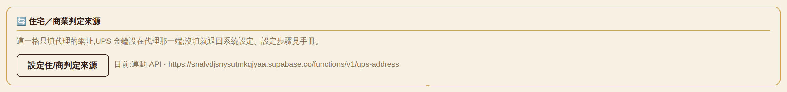

用戶端無法直接呼叫 UPS API:UPS 要求 OAuth 認證,且未提供跨來源存取(CORS)。因此於 Supabase Edge Function 部署一個代理服務,由代理持有憑證並代為呼叫,用戶端僅傳送地址、接收分類結果。
回傳值:R 住宅、C 商業、U 無法判定。回傳 U 或呼叫失敗時,計價流程回退至系統判定邏輯。
UPS Client ID 與 Client Secret 僅以環境變數形式存放於代理服務,不在用戶端設定介面中提供輸入欄位。
CFG.raw,該物件會存入瀏覽器 localStorage、同步至帳號設定紀錄,並包含於匯出的設定檔中。憑證若置於此處,將隨上述三種載體散布。此外,用戶端受 CORS 限制無法直接呼叫 UPS,即使填入憑證亦無作用。
於 developer.ups.com 建立應用程式,並將 Address Validation 加入該應用程式的產品清單,取得 Client ID 與 Client Secret。
POST /api/addressvalidation/v2/3,路徑末端的 3 為 request option 3,即「地址驗證 + 地址分類」。應用程式僅訂閱 Rating 或 Tracking 不符需求,驗證階段將回傳 502 UPS 403。
# 授權 CLI(將開啟瀏覽器) supabase login # 於儲存庫根目錄執行,產生 supabase/config.toml supabase link --project-ref snalvdjsnysutmkqjyaa
儲存庫目前不含 config.toml,首次部署必須先執行連結。
supabase secrets set \ UPS_CLIENT_ID=<client-id> \ UPS_CLIENT_SECRET=<client-secret> \ UPS_BASE=https://wwwcie.ups.com
| 變數 | 說明 |
|---|---|
| UPS_CLIENT_ID | 必填 |
| UPS_CLIENT_SECRET | 必填 |
| UPS_BASE | 選填。預設 https://onlinetools.ups.com(正式環境)。首次部署建議指向 https://wwwcie.ups.com(CIE 測試環境),不消耗正式配額 |
| SUPABASE_URL SUPABASE_ANON_KEY | 無須設定,由平台自動注入 |
supabase functions deploy ups-address
環境變數變更後無須重新部署,即時生效。
代理服務對不同失敗原因回傳不同狀態碼,可依序驗證以定位問題層級。建議依 3.1 至 3.3 順序執行。
不附帶認證資訊直接呼叫:
curl -i -X POST \
"https://snalvdjsnysutmkqjyaa.supabase.co/functions/v1/ups-address" \
-H "Content-Type: application/json" -d "{}"
| 回應 | 判讀 |
|---|---|
| 401 not signed in | 部署成功。代理正確拒絕未經認證的請求 |
| 404 | 函式未部署,返回 2.4 |
於 Supabase 主控台 Authentication → Users → Add user 建立測試帳號(電子郵件與密碼,並標記為已確認),再取得權杖:
curl -X POST \
"https://snalvdjsnysutmkqjyaa.supabase.co/auth/v1/token?grant_type=password" \
-H "apikey: <anonKey,見 auth-config.js>" \
-H "Content-Type: application/json" \
-d '{"email":"<email>","password":"<password>"}'
由回應中取出 access_token 欄位。
curl -X POST \
"https://snalvdjsnysutmkqjyaa.supabase.co/functions/v1/ups-address" \
-H "Authorization: Bearer <access_token>" \
-H "Content-Type: application/json" \
-d '{"address":"1600 Pennsylvania Ave NW","city":"Washington",
"state":"DC","postal":"20500","country":"US"}'
| 回應 | 判讀與處置 |
|---|---|
| 200 {"class":"R"|"C"|"U"} | 驗證通過,可進行 3.4 |
| 500 UPS credentials not configured | 環境變數未設定,返回 2.3 |
| 502 UPS 401 | UPS 憑證錯誤,核對 Client ID 與 Secret |
| 502 UPS 403 | 應用程式未訂閱 Address Validation,返回 2.1 |
檢視執行紀錄:
supabase functions logs ups-address
supabase secrets set UPS_BASE=https://onlinetools.ups.com
路徑:設定 分頁 → 住宅／商業判定來源 → 設定住/商判定來源。




auth.getUser() 驗證呼叫者為有效的 Supabase 使用者。系統目前運行於本機帳號模式(LOCAL_MODE),不建立 Supabase 工作階段,所有請求將回傳 401,計價流程全數回退至系統判定。
此限制不影響第 2 節與第 3 節的執行價值 —— 該二節驗證的是代理服務與 UPS 憑證,與用戶端認證方式無關,完成後即為可重複使用的基礎設施。第 4 節之設定須待認證模式切換並完成資料轉移後方能生效。
若各使用者需使用各自的 UPS 配額,代理服務須改為依呼叫者身分查詢對應憑證:憑證存放於僅伺服器端可讀取的資料表,代理以已驗證的使用者身分取得該筆憑證。端點網址仍為全體共用。
此模式的前提同樣為具備真實使用者身分 —— 本機帳號模式下所有用戶端共用同一組 anon key,伺服器端無法區分呼叫者。
priceShipment() 中,API 回傳結果之優先序高於帳單代碼與帳單歷史。凡 API 能夠判定之貨件,其住宅／商業分類均以 API 結果為準,包含帳單已載明住宅代碼者。
啟用後受影響的並非僅有原本判定不確定的少數貨件,而是全部可判定貨件,計價結果將隨之變動。
建議程序:先於單一帳號啟用,以同一期帳單分別於啟用與停用狀態執行重算,比對總額與住宅／商業筆數差異,確認 UPS 地址分類與帳單代碼之不一致比例後,再行推廣。
| 畫面訊息 | 成因與處置 |
|---|---|
| 已選「連動 API」但沒有填代理端點 | 端點欄位為空,見第 4 節 |
| API 代理呼叫失敗(HTTP 401) | 無有效認證工作階段,見 5.1 |
| API 代理呼叫失敗(HTTP 404) | 端點網址錯誤或函式未部署,見 2.4 |
| API 代理呼叫失敗(HTTP 500) | 代理端 UPS 憑證未設定,見 2.3 |
| N 個地址呼叫失敗 | 部分請求失敗,該部分回退系統判定。失敗結果不寫入快取,下次重算自動重試 |
| API 沒有回傳任何住/商分類 | UPS 對該批地址均回傳 U(無法判定) |
| 選取連動 API,面板顯示「系統設定」 | 端點未填寫。面板顯示實際生效之來源,見圖 4 |